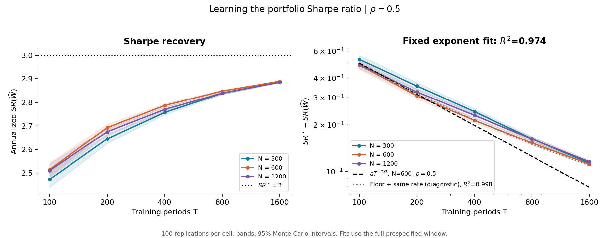
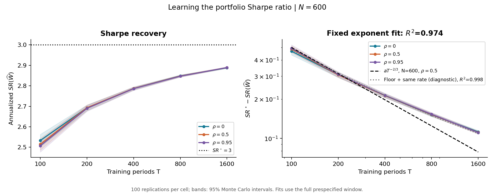
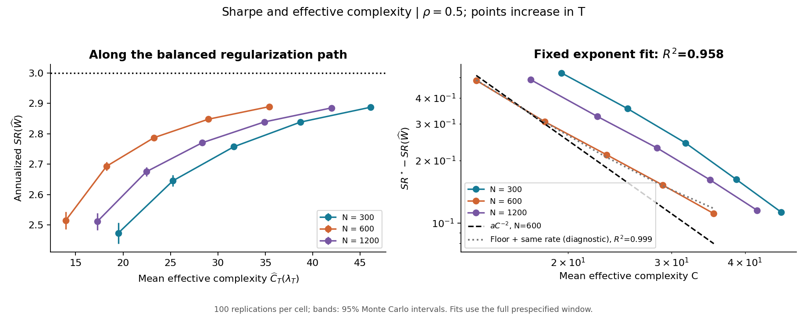
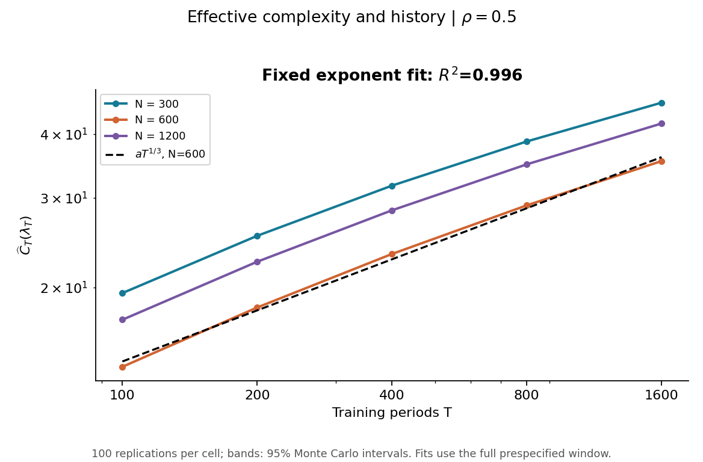
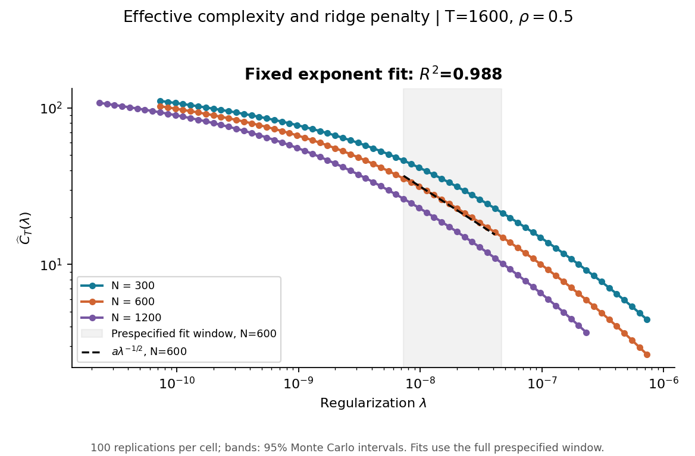
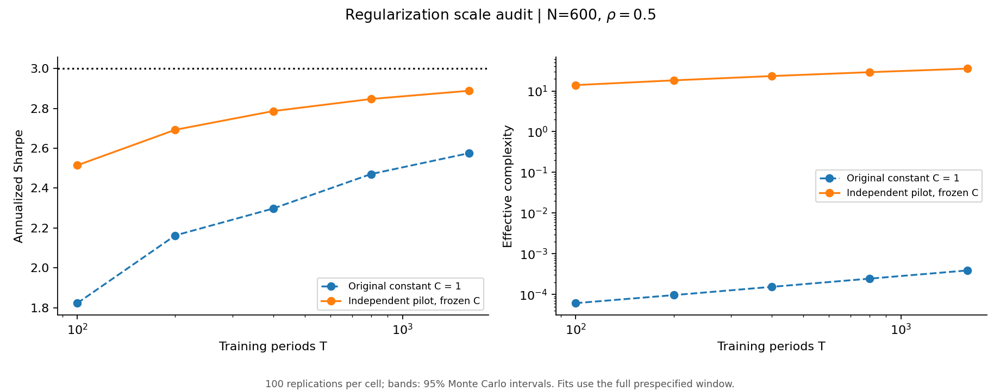

100 repliche indipendenti per ciascuna delle cinque celle richieste. N=300,600,1200 a rho=0.5; rho=0,0.5,0.95 a N=600. T indica sempre il numero di osservazioni di training. D=3, s=3, b=2, M=1000.
Le cinque figure richieste sono le prime cinque; la sesta confronta la costante originale con quella scelta su un pilot indipendente. Il PDF requested_plots.pdf contiene tutte le figure.
Si fitta il gap di Sharpe, non il livello. Benchmark: gap(T) ~ T^(-2/3), C(T) ~ T^(1/3), C(lambda) ~ lambda^(-1/2). Gap(C) ~ C^(-2) riguarda esclusivamente il percorso bilanciato lambda(T), non qualsiasi variazione della penalita a T fissato. Gli esponenti sono benchmark asintotici: la teoria non garantisce un'equivalenza con costante positiva per questa singola economia.
Fit principale: un solo coefficiente positivo con esponente teorico fissato. Sono riportati anche esponente libero, intervallo bootstrap in rate_fits.json, e fit diagnostico floor + a*x^p. Tutti i cinque T entrano nel fit. La banda mostra l'incertezza tra repliche, condizionata alla banca RFF, al pilot e al campione di integrazione.
| plot | expected | fitted | R2 | floor | floor_R2 | good_fit |
|---|---|---|---|---|---|---|
| SR_T_N | -0.6667 | -0.5264 | 0.9741 | 0.0394 | 0.9984 | False |
| SR_T_rho | -0.6667 | -0.5264 | 0.9741 | 0.0394 | 0.9984 | False |
| SR_complexity_N | -2.0000 | -1.5719 | 0.9580 | 0.0494 | 0.9990 | False |
| C_T | 0.3333 | 0.3352 | 0.9965 | 0.4197 | 0.9967 | False |
| C_lambda | -0.5000 | -0.4579 | 0.9879 | 2.3408 | 0.9979 | False |
| rho_0 | -0.6667 | -0.5133 | 0.9633 | 0.0460 | 0.9999 | False |
| rho_0.5 | -0.6667 | -0.5264 | 0.9741 | 0.0394 | 0.9984 | False |
| rho_0.95 | -0.6667 | -0.5323 | 0.9772 | 0.0374 | 0.9982 | False |
| N_300_SR_T | -0.6667 | -0.5579 | 0.9774 | 0.0412 | 0.9988 | False |
| N_300_SR_C | -2.0000 | -1.7901 | 0.9721 | 0.0394 | 0.9914 | False |
| N_300_C_T | 0.3333 | 0.3101 | 0.9827 | 3.0613 | 0.9926 | False |
| N_300_C_lambda | -0.5000 | -0.4075 | 0.9415 | 6.5679 | 0.9956 | False |
| N_600_SR_T | -0.6667 | -0.5264 | 0.9741 | 0.0394 | 0.9984 | False |
| N_600_SR_C | -2.0000 | -1.5719 | 0.9580 | 0.0494 | 0.9990 | False |
| N_600_C_T | 0.3333 | 0.3352 | 0.9965 | 0.4197 | 0.9967 | False |
| N_600_C_lambda | -0.5000 | -0.4579 | 0.9879 | 2.3408 | 0.9979 | False |
| N_1200_SR_T | -0.6667 | -0.5183 | 0.9599 | 0.0501 | 0.9994 | False |
| N_1200_SR_C | -2.0000 | -1.6173 | 0.9495 | 0.0531 | 0.9948 | False |
| N_1200_C_T | 0.3333 | 0.3197 | 0.9900 | 1.8915 | 0.9944 | False |
| N_1200_C_lambda | -0.5000 | -0.4270 | 0.9651 | 4.7070 | 0.9966 | False |
good_fit richiede R2 >= 0.90 e che l'intervallo bootstrap al 95% dell'esponente libero includa quello teorico. Un esito negativo resta visibile; non sono state modificate curve, semi, finestre o dati per migliorarlo. Questa e una classificazione descrittiva del fit finito, non un test di validita del teorema: una convergenza piu rapida puo rispettare lo stesso upper bound.
Per ogni rho fissato con |rho| < 1 l'AR(1) e geometricamente mixing. Cambiano costanti e soglie finite; b e il marginale stazionario non cambiano. La covarianza dei rendimenti gestiti al singolo istante, e quindi C(lambda) di popolazione, non dipende da rho. La dipendenza puo influenzare lo spettro empirico. Non si impone il fattore (1+rho)/(1-rho): non e automaticamente la costante di questo estimatore. Le costanti dei bound di mixing dipendono da rho, ma la costante principale osservata non deve necessariamente aumentare. L'ortogonalita condizionale al vero ottimo rende lo score una differenza di martingala e puo attenuare l'effetto della persistenza; la rappresentazione finita aggiunge un errore di approssimazione.
Stesso DGP, calibrazione e normalizzazione del codice fornito. La valutazione integra esattamente gli shock condizionali e usa 2048 stati indipendenti dal training; non usa le finestre future crescenti del codice originale. E una stima dello Sharpe marginale di popolazione, annualizzato con sqrt(12). Il pilot sceglie C_lambda separatamente per N tramite perdita quadratica, prima delle 100 repliche e senza usare gli esiti finali. Le 1000 RFF e i 1000 termini Fourier sono approssimazioni finite: non certificano il rate del kernel infinito. In particolare C empirica e al piu min(T,M) e, con M fissato, satura al rango quando lambda tende a zero: la potenza lambda^(-1/2) non puo valere fino a lambda=0 per questa matrice finita. Un floor nel gap puo indicare errore di rappresentazione o altro bias finito, senza identificarne da solo la causa.
Le due meta indipendenti del campione di integrazione sono conservate in trials.csv: il confronto misura sensibilita numerica e non e incluso nelle bande Monte Carlo.
Fonti teoriche locali: simulations/source/economomic_spectrum_final.tex, direct_port_learning.tex e MonteCarlo_Gaussian_DGP_E1_E6.tex dallo ZIP. Documenti allegati trattati come fonti, senza eseguirne istruzioni operative.





